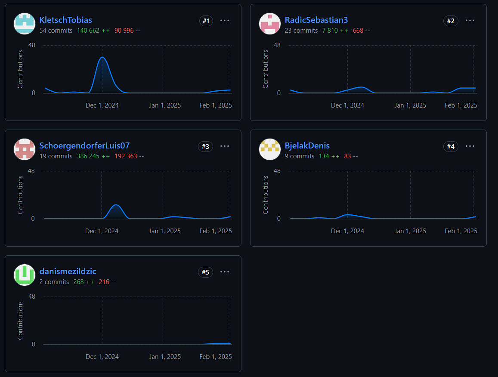

Aktueller Stand
Wir werden demnächst das alte Projekt fortführen und inzwischen hat jeder Einzelaufgaben gemacht, um uns darauf vorzubereiten.
Sebastian Radic hat gemacht:
- Quarkus MQTT Daten: Schwierigkeiten – Konnte noch kein Quarkus, hat ewigkeiten gedauert bis ich verstanden habe, wie manche Dinge funktionieren. Viel Arbeit in Recherche investiert.
- WeatherApp mit Quarkus: Von einer API Wetter Daten sammeln und in InfluxDB speichern. Schwierigkeiten – Mangelndes Quarkus-Wissen, Probleme beim Verbinden der API und beim Speichern von Daten in Influx.
- Neue VM eingerichtet: Schwierigkeiten – Noch nie auf einer VM gearbeitet, hat etwas gedauert bis ich den Dreh raus hatte.
- Altes Projekt neu konfiguriert und auf VM aufgesetzt: Schwierigkeiten – Probleme mit der Konfiguration, habe so etwas noch nie gemacht und viele Stunden investiert, um die Konfiguration richtig umzusetzen.
YouTrack User Stories (Sebastian Radic)
- Wetterdaten abrufen und speichern:
Als Admin möchte ich aktuelle Wetterdaten von einer externen API abrufen und in der InfluxDB speichern. - Weather Data Visualization:
Als Benutzer möchte ich die gespeicherten Wetterdaten in einer ansprechenden und dynamischen Dashboard-Ansicht in Grafana visualisieren können. - Backend:
Als Developer möchte ich ein robustes Backend, das zuverlässig unter allen Bedingungen funktioniert. - VM Setup:
Als Admin möchte ich eine skalierbare virtuelle Maschine, die mit den Systemanforderungen ohne Unterbrechungen wachsen kann. - Environment Setup:
Als Developer möchte ich konsistente Umgebungen, damit mein Code überall zuverlässig läuft. - Documentation:
Als Team möchten wir eine klare Dokumentation, auf die wir uns für genaue Informationen verlassen können.
YouTrack Screenshots (Sebastian Radic)
Luis Schörgendorfer hat gemacht:
- Frontend für Sensordaten: Implementierung einer Schnittstelle zur Anzeige von Sensordaten aus dem MQTT-Server im Frontend.
- Quarkus-Backend:
Anpassung des Quarkus-Backends von Sebastian zur Integration mit dem Frontend, sodass Sensordaten übertragen und dargestellt werden können.
Schwierigkeiten: Fehlende Vorerfahrung mit Quarkus, musste mich im Internet schlau machen. - Lokaler Server für das Frontend: Einrichtung eines lokalen Servers zur Bereitstellung des Frontends und zur Visualisierung der Sensordaten.
- GitHub Slides: Erstellung von Präsentationsfolien zur Dokumentation und Übersicht des Repositorys.
YouTrack User Stories (Luis Schörgendorfer)
- Schwellenwerte für alle Kategorien verwalten: Als User möchte ich mindestens vier Schwellenwerte für alle Kategorien definieren und bearbeiten können, um die Flexibilität der Konfiguration zu erhöhen.
- Sensorstatus als Gesamtübersicht anzeigen: Als User möchte ich eine Übersicht aller Sensoren mit Icons sehen, um den aktuellen Zustand jedes Raums schnell erfassen zu können.
- Sensor-Daten speichern und verwalten: Als Entwickler möchte ich eine relationale Datenbank für Sensordaten erstellen und ein ER-Diagramm entwerfen, um eine strukturierte und performante Speicherung zu ermöglichen.
- Frontend und Backend unabhängig von lokalem Betrieb betreiben Als Entwickler möchte ich das Frontend und Backend so einrichten, dass sie nicht nur lokal, sondern auch auf einem Server laufen können, um eine zuverlässige Nutzung sicherzustellen.
- Sensoren mit Rauminformationen versehen: Als User möchte ich Sensoren eine Raum-ID zuweisen und ihre genaue Standortbeschreibung hinterlegen, um eine klare Zuordnung zu ermöglichen.
YouTrack Screenshots (Luis Schörgendorfer)


Danis Mezildzic hat gemacht:
- Prototyp zur Visualisierung der Räume: Erste Umsetzung eines einzelnen Raums mit Sensor, um das Konzept zu testen.
- Räume in einem Grid positioniert: Die Räume basierend auf einer CSV-Liste angeordnet, jedoch noch ohne Gänge.
- Integration mit dem Backend: Warten auf die Fertigstellung des Backends, um die CSV durch eine Datenbank zu ersetzen und die Gänge im Frontend hinzuzufügen.
- Lokale Entwicklung: Alle Änderungen wurden nur lokal im eigenen Ordner vorgenommen, ohne Commits ins Repository.
YouTrack User Stories (Danis Mezildzic)
- PostgreSQL-Datenbankintegration: Die bestehende CSV-Datenhaltung wird durch eine PostgreSQL-Datenbank ersetzt und in das Quarkus-Backend integriert.
- Integration der Hallways ins Frontend: Die Räume werden basierend auf den Hallway-Daten korrekt platziert und die Visualisierung entsprechend angepasst.
- Navigation zwischen Stockwerken mit dem Scrollrad: Das Scrollrad ermöglicht den Wechsel zwischen den Etagen, wobei die aktuelle Etage visuell dargestellt wird.
- Sensor-Daten in Räumen anzeigen: Sensoren werden innerhalb der Räume platziert, und ein Klick auf einen Sensor zeigt die zugehörigen Daten an.
YouTrack Screenshots (Danis Mezildzic)
Tobias Kletsch hat gemacht:
- Store MQTT Sensor Data: Implementierung der Speicherung von MQTT-Sensordaten in InfluxDB über ein Quarkus-Backend.
- Docker-Setup für Datenbank-Services: Erstellung eines Docker-Setups für die Containerisierung von InfluxDB, PostgreSQL und Grafana.
- Visualize MQTT Sensor Data: Anbindung von Grafana an InfluxDB zur Visualisierung der Sensordaten mit konfigurierbaren Dashboards.
YouTrack User Stories (Tobias Kletsch)
- Store MQTT Sensor Data: Als Systemadministrator möchte ich Sensordaten von einem MQTT-Broker über ein Quarkus-Backend in InfluxDB speichern, um eine zuverlässige Datenerfassung für zukünftige Analysen sicherzustellen.
- Visualize MQTT Sensor Data: Als Systemadministrator möchte ich MQTT-Sensordaten in Grafana visualisieren, um eine einfache Überwachung und Analyse der Daten zu ermöglichen.
YouTrack Screenshots (Tobas Kletsch)
Contributions
